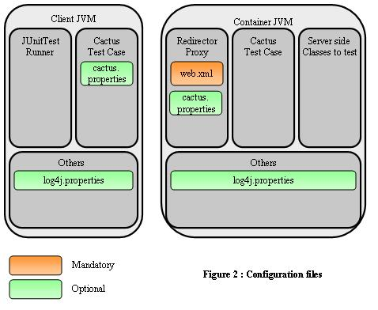

|
|
| Apache > Jakarta > Cactus > Running Tests > Manual | Docs for: v1.7.2 | v1.7 Last update: March 26 2006 |
|
Cactus ConfigurationHere are the configuration files used to configure Cactus manually:

There are 3 kinds of configuration: Cactus configuration works by setting Java System properties. You can set the Cactus configuration properties:
Please note that the different options for configuring Cactus works
both for Cactus client side (i.e. from where you start the JUnit Test
Runner) and for the Cactus server side (i.e. from where you start your
application server).
Client side configurationThe following table lists the properties that can be defined on Cactus client side:
Server side configuration
On Cactus server side, you only need to properly configure your
application
You need to register the Cactus Redirectors that you use, and you
need to map them to the
Here is a sample
<?xml version="1.0" encoding="ISO-8859-1"?>
<!DOCTYPE web-app
PUBLIC "-//Sun Microsystems, Inc.//DTD Web Application 2.3//EN"
"http://java.sun.com/j2ee/dtds/web-app_2_3.dtd">
<web-app>
<filter>
<filter-name>FilterRedirector</filter-name>
<filter-class>org.apache.cactus.server.FilterTestRedirector</filter-class>
</filter>
<filter-mapping>
<filter-name>FilterRedirector</filter-name>
<url-pattern>/FilterRedirector</url-pattern>
</filter-mapping>
<servlet>
<servlet-name>ServletRedirector</servlet-name>
<servlet-class>org.apache.cactus.server.ServletTestRedirector</servlet-class>
</servlet>
<servlet>
<servlet-name>JspRedirector</servlet-name>
<jsp-file>/jspRedirector.jsp</jsp-file>
</servlet>
<servlet-mapping>
<servlet-name>ServletRedirector</servlet-name>
<url-pattern>/ServletRedirector</url-pattern>
</servlet-mapping>
<servlet-mapping>
<servlet-name>JspRedirector</servlet-name>
<url-pattern>/JspRedirector</url-pattern>
</servlet-mapping>
</web-app>
If you are using the JSP Redirector (i.e. you have test classes
that extend
JspTestCase), you must
copy the jspRedirector.jsp file (found in the
sample/web directory where you unpacked your
Cactus distribution) in a directory in your webapp and you need to
put its relative path in the mapping defined above (here we
have put it in the webapp root.
If you want to provide some initialisation parameters that will
be available to the For example, for the Servlet Redirector (same principle applies to all other redirectors):
[...]
<servlet>
<servlet-name>ServletRedirector</servlet-name>
<servlet-class>org.apache.cactus.server.ServletTestRedirector</servlet-class>
<init-param>
<param-name>param1</param-name>
<param-value>value1 used for testing</param-value>
</init-param>
</servlet>
[...]
Within your
testXXX() code, you can also call the
config.setInitParameter() method (config
being the implicit object of type ServletConfig) to
simulate initialisation parameters as if they had been defined in
your web.xml.
Last, if you need to unit test code that uses the Servlet Security API, please check the Security Howto. Cactus logging configurationSince Cactus 1.4, we have switched to using the Jakarta Commons Logging framework for Cactus internal logs (and any log you may wish to output as part of your test). This allow Cactus to use any underlying logging framework such as: Log4J, LogKit, JDK 1.4 Logging or even a Simple Logger provided as part of Commons Logging (it outputs to the console). Cactus is completely agnostic with regards to the logging framework configuration, so you will have to learn how to configure your favorite logging yourself. However here are some tips to help set up a Cactus logging configuration. 'cactus.logging.config' property
Cactus provides an optional
If you're using the Ant
<cactus> task, please
refer to the documentation for that
task to set up Cactus logging.
Sample logging configuration filesAs Cactus is running in 2 JVMs (client side and server side), you'll need to provide 2 logging configuration if you wish to enable logging for both sides. Here are some sample configuration files. Client side configuration sample
Notice that for JDK 1.4 logging and for Log4J logging you have
to specify that path to this file as these 2 logging systems also
use a configuration file to configure themselves. Alternatively
you can put configuration data in other files. However, it's
convenient to group everything in a single file.
# -----------------------------------------------------------------------------
# Logging properties
# -----------------------------------------------------------------------------
# Disable logging by default when running the tests. If you wish to use a
# logging subsystem, uncomment the line below. That will let Commons logging
# decide automatically of a suitable logging system for you. You can also force
# commons-logging to use a specific logging system. For more info, see
# http://jakarta.apache.org/commons/logging
# Disable logging
#org.apache.commons.logging.Log = org.apache.commons.logging.impl.NoOpLog
# Force to use JDK 1.4 logging
#org.apache.commons.logging.Log = org.apache.commons.logging.impl.Jdk14Logger
# Force to use Log4J logging
#org.apache.commons.logging.Log = org.apache.commons.logging.impl.Log4JLogger
# Force to use Simple logging
#org.apache.commons.logging.Log = org.apache.commons.logging.impl.SimpleLog
# ---- JDK 1.4 logging properties
# Following properties are useful if you're using the JDK 1.4 logging subsystem
# and wish to output logs to a file. Make sure to comment out the NoOpLog line
# above.
java.util.logging.config.file = @target.dir@/logging_client.properties
handlers = java.util.logging.FileHandler
java.util.logging.FileHandler.pattern = @target.dir@/test_client.log
java.util.logging.FileHandler.formatter = java.util.logging.SimpleFormatter
# If you want to provide finer grained logging, restrict the level for the
# specific package name.
# For example:
# org.apache.cactus.server.level = ALL
# org.apache.commons.httpclient.level = ALL
# .level = ALL
org.apache.cactus.level = ALL
# ---- Log4J logging properties
# Following properties are useful if you're using the Log4J logging subsystem
# and wish to output logs to a file. Make sure to comment out the NoOpLog line
# above.
log4j.configuration = file:/@target.dir@/logging_client.properties
log4j.appender.cactus = org.apache.log4j.FileAppender
log4j.appender.cactus.File = @target.dir@/test_client.log
log4j.appender.cactus.Append = false
log4j.appender.cactus.layout = org.apache.log4j.PatternLayout
log4j.appender.cactus.layout.ConversionPattern = %d{ABSOLUTE} [%t] %-5p %-30.30c{2} %x - %m %n
# Any application log which uses Log4J will be logged to the Cactus log file
log4j.rootCategory=DEBUG, cactus
# Debug logs for Cactus
log4j.category.org.apache.cactus = DEBUG, cactus
log4j.additivity.org.apache.cactus = false
# Debug logs for HttpClient
log4j.category.org.apache.commons.httpclient = DEBUG, cactus
log4j.additivity.org.apache.commons.httpclient = false
log4j.category.httpclient = WARN, cactus
log4j.additivity.httpclient = false
# ---- SimpleLog logging properties
org.apache.commons.logging.simplelog.showlogname = true
org.apache.commons.logging.simplelog.log.org.apache.cactus = trace
org.apache.commons.logging.simplelog.log.org.apache.commons.httpclient = trace
Server side configuration sample
Notice that for JDK 1.4 logging and for Log4J logging you have
to specify that path to this file as these 2 logging systems also
use a configuration file to configure themselves. Alternatively
you can put configuration data in other files. However, it's
convenient to group everything in a single file.
# -----------------------------------------------------------------------------
# Logging properties
# -----------------------------------------------------------------------------
# Disable logging by default when running the tests. If you wish to use a
# logging subsystem, uncomment the line below. That will let Commons logging
# decide automatically of a suitable logging system for you. You can also force
# commons-logging to use a specific logging system. For more info, see
# http://jakarta.apache.org/commons/logging
# Disable logging
#org.apache.commons.logging.Log = org.apache.commons.logging.impl.NoOpLog
# Force to use JDK 1.4 logging
#org.apache.commons.logging.Log = org.apache.commons.logging.impl.Jdk14Logger
# Force to use Log4J logging
#org.apache.commons.logging.Log = org.apache.commons.logging.impl.Log4JLogger
# Force to use Simple logging
#org.apache.commons.logging.Log = org.apache.commons.logging.impl.SimpleLog
# ---- JDK 1.4 logging properties
# Following properties are useful if you're using the JDK 1.4 logging subsystem
# and wish to output logs to a file. Make sure to comment out the NoOpLog line
# above.
java.util.logging.config.file = @target.dir@/logging_server.properties
handlers = java.util.logging.FileHandler
java.util.logging.FileHandler.pattern = @target.dir@/test_server.log
java.util.logging.FileHandler.formatter = java.util.logging.SimpleFormatter
# If you want to provide finer grained logging, restrict the level for the
# specific package name.
# For example: org.apache.cactus.server.level = ALL
org.apache.cactus.level = ALL
# ---- Log4J logging properties
# Following properties are useful if you're using the Log4J logging subsystem
# and wish to output logs to a file. Make sure to comment out the NoOpLog line
# above.
log4j.configuration = file:/@target.dir@/logging_server.properties
log4j.appender.cactus = org.apache.log4j.FileAppender
log4j.appender.cactus.File = @target.dir@/test_server.log
log4j.appender.cactus.Append = false
log4j.appender.cactus.layout = org.apache.log4j.PatternLayout
log4j.appender.cactus.layout.ConversionPattern = %d{ABSOLUTE} [%t] %-5p %-30.30c{2} %x - %m %n
# Any application log which uses Log4J will be logged to the Cactus log file
log4j.rootCategory=DEBUG, cactus
# Debug logs for Cactus
log4j.category.org.apache.cactus = DEBUG, cactus
log4j.additivity.org.apache.cactus = false
# Debug logs for HttpClient
log4j.category.org.apache.commons.httpclient = DEBUG, cactus
log4j.additivity.org.apache.commons.httpclient = false
log4j.category.httpclient = WARN, cactus
log4j.additivity.httpclient = false
# ---- SimpleLog logging properties
org.apache.commons.logging.simplelog.showlogname = true
org.apache.commons.logging.simplelog.log.org.apache.cactus = trace
org.apache.commons.logging.simplelog.log.org.apache.commons.httpclient = trace
Tips
JUnit uses a different classloader to load each test of a TestCase
class. Thus, Log4j will reinitialise for each test, which may lead
to overwriting the |